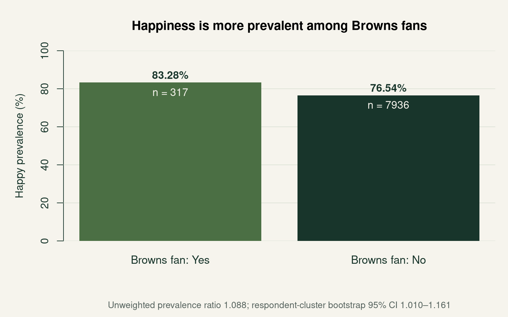

NFL Team Fandom Identities · RQ1 · September 11, 2026
Happy endorsement
and Browns fandom
In the verified archive, 83.23% of Browns-fan respondent-days endorse happy, compared with 76.55% of explicit non-fan respondent-days.
Prepared by Ceetown and Aleph Initial Alpha. Observations: July 8, 2025–August 27, 2026.
Read the full report · Two-page report (PDF) · Data and code

Observed happy endorsement is about 8.7% higher in relative terms among Browns fans. The prevalence ratio divides 83.23% by 76.55%, giving 1.087. The absolute difference is 6.68 percentage points; these two effect sizes describe the same comparison. Definition and interpretation.
The comparison requires explicit answers on the same day. Responses are joined to demographics using both respondent ID and observation date. An unpresented identity signifier is never treated as No; explicit non-fans may follow other teams or no football. Eligibility and audit.
Repeated respondents matter for uncertainty. The 8,235 eligible days come from 4,686 people; 1,392 contribute multiple days. Resampling whole respondents gives a 95% interval of 1.007–1.160, whose lower bound is close to equal prevalence. Counts and uncertainty.
This measures self-description, not the effect of fandom on happiness. The survey asks whether supplied signifiers describe respondents, and both signifiers are measured contemporaneously. Selection, recurrence, and probabilistic presentation limit generalization to all U.S. fans. Limits of inference.
Age-sex adjustments produce similar point estimates. Pooled calibration gives a ratio of 1.080; standardizing both groups to a common adult distribution gives 1.078. These are exploratory comparisons, because the demographic distribution of Browns fans is unknown and weighted intervals have not been estimated. Weighting appendix.
Monthly results are too sparse for game-by-game conclusions. Twelve of fourteen monthly ratios exceed 1, but months contain only 15–29 fan respondent-days. All-team rankings and weekly season analysis remain future work. Monthly denominators.
The report uses a checksum-verified archive after a download discrepancy. The primary-host files retrieved this iteration contained only one week despite the page advertising cumulative data. Zenodo record 22139541 supports the current result through August 27; the historical saved August 28 estimate remains separate. Snapshot comparison.
Source: Jones, J. J. (2026). Ipseity Daily data [Data set]. Zenodo. https://doi.org/10.5281/zenodo.22139541. Full methods and APA references appear in the full report.